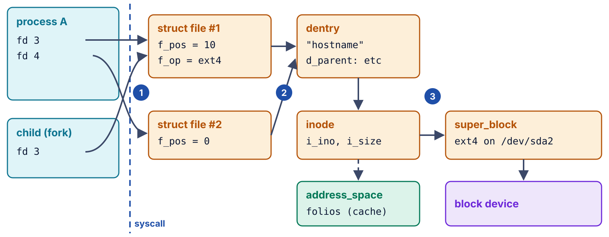
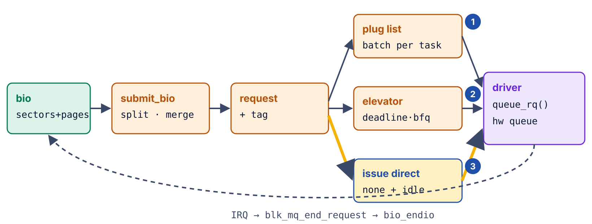
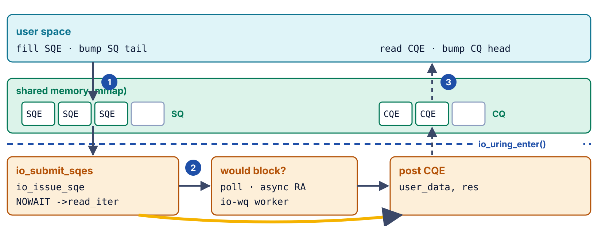

سیستمعامل پیشرفته · ۰۵ فایلسیستم و I/O
پایگاهدادهها، لاگها و containerها به این بستگی دارند که page cache، لایهٔ بلوک و journal واقعاً چه قولی میدهند.

struct file را شریک میشوندksys_readvfs_readnew_sync_readread_iterfilemap_readget_pagesدر miss، گام ۶ readahead را شروع میکند و bio به blk-mq میرود.
if (!(file->f_mode & FMODE_READ)) return -EBADF; /* ... CAN_READ, access_ok ... */ ret = rw_verify_area(READ, file, pos, count); /* ... MAX_RW_COUNT clamp ... */ if (file->f_op->read) ret = file->f_op->read(file, buf, count, pos); else if (file->f_op->read_iter) ret = new_sync_read(file, buf, count, pos);open()/dev/null از .read و ext4 از .read_iter استفاده میکندfilemap_get_read_batch(mapping, index, last_index - 1, fbatch);if (!folio_batch_count(fbatch)) { DEFINE_READAHEAD(ractl, filp, &filp->f_ra, mapping, index); if (iocb->ki_flags & IOCB_NOIO) return -EAGAIN; /* ... NOWAIT, DONTCACHE ... */ page_cache_sync_ra(&ractl, last_index - index); filemap_get_read_batch(mapping, index, last_index - 1, fbatch);}$ ./pcache evict big.bin; ./pcache resident big.binresident: 0/65536 pages (0.0%)$ ./pcache read big.bin # coldread: 256 MiB in 0.745 s = 344 MiB/s@added_folios: 1049 @sync_ra: 1 @async_ra: 34$ ./pcache resident big.binresident: 65536/65536 pages (100.0%)$ ./pcache read big.bin # warmread: 256 MiB in 0.079 s = 3256 MiB/s@added_folios: 0روی یک مهمان VirtualBox مشترک با ۸ vCPU ثبت شده؛ اعداد مطلق شما متفاوت خواهد بود.

scheduler A:IOPS A:p99(us) | B:rd p50 B:rd p99 B:wr MiB/snone 3988 14877 | 17170 101188 609.7mq-deadline 4643 12386 | 43778 219152 208.4bfq 4310 15008 | 522 1057 10.6kyber 4108 14746 | 23724 223347 373.3 # run 1 (same script, minutes earlier):bfq 3446 78119 | 13697 162529 648.6A: 4 KiB randread QD32. B: خوانندهٔ QD1 کنار یک نویسندهٔ ترتیبی 1 MiB. VM مشترک: شکلها را مقایسه کنید، نه مقدارها.
T_LOCKEDordered→ journalPREFLUSHFUAin placecrash پیش از ⑤: replay تراکنش را نادیده میگیرد. پس از ⑤: replay آن را اعمال میکند.
$ bash crash-demo.sh # data=ordered== before the crash: A 19 bytes B 21 bytes config: new contents# dmsetup load DROP; suspend --nolockfs; sync; umount== kernel log at remount: EXT4-fs (dm-0): recovery complete== after the crash: A 19 bytes: A: written + fsync B MISSING config 13 bytes: old contents
buf(9)، bufcachepercentffs_read → bread()، قفل vnodeVOP_LOOKUPfsckclose() آن را flush کردهجایگزینی پایدار: write tmp → fsync(tmp) → rename → fsync(dir)
notes/07 · fs/jbd2/commit.c L546 · fs/ext4/fsync.c L141 · v6.18.63
ماژول ۰۶ · سیستمعامل توزیعشده و مجازیسازی
فهرستها: jubalh/awesome-os · penberg/awesome-os · لینکها بررسی شده 2026-11-15